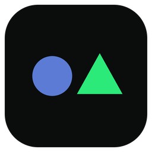
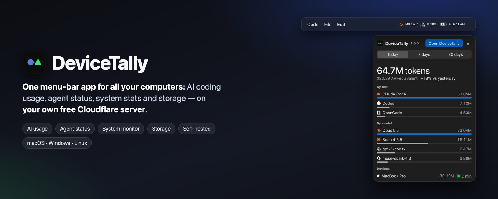
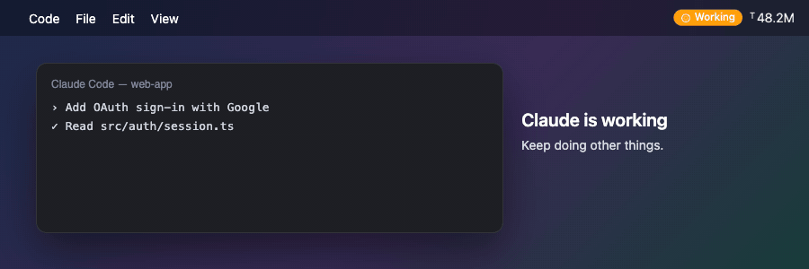
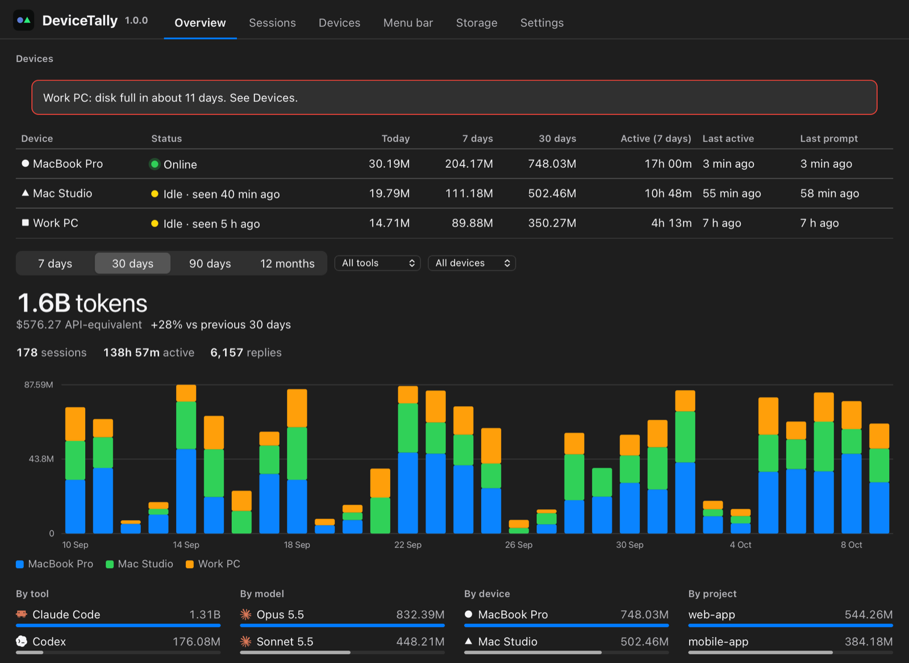
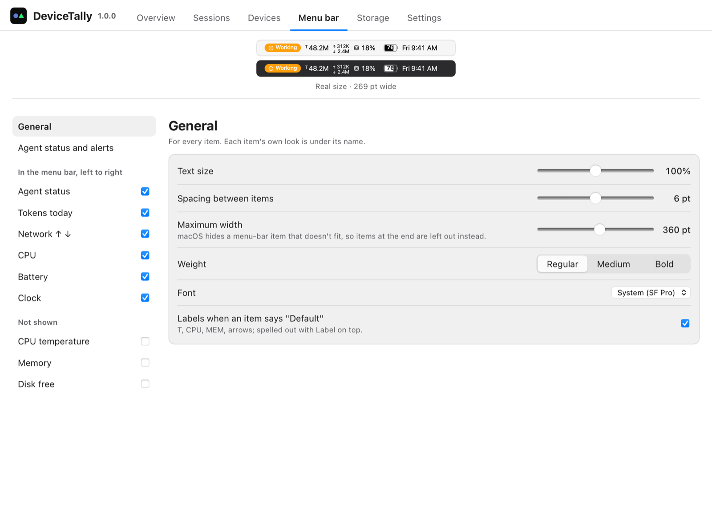
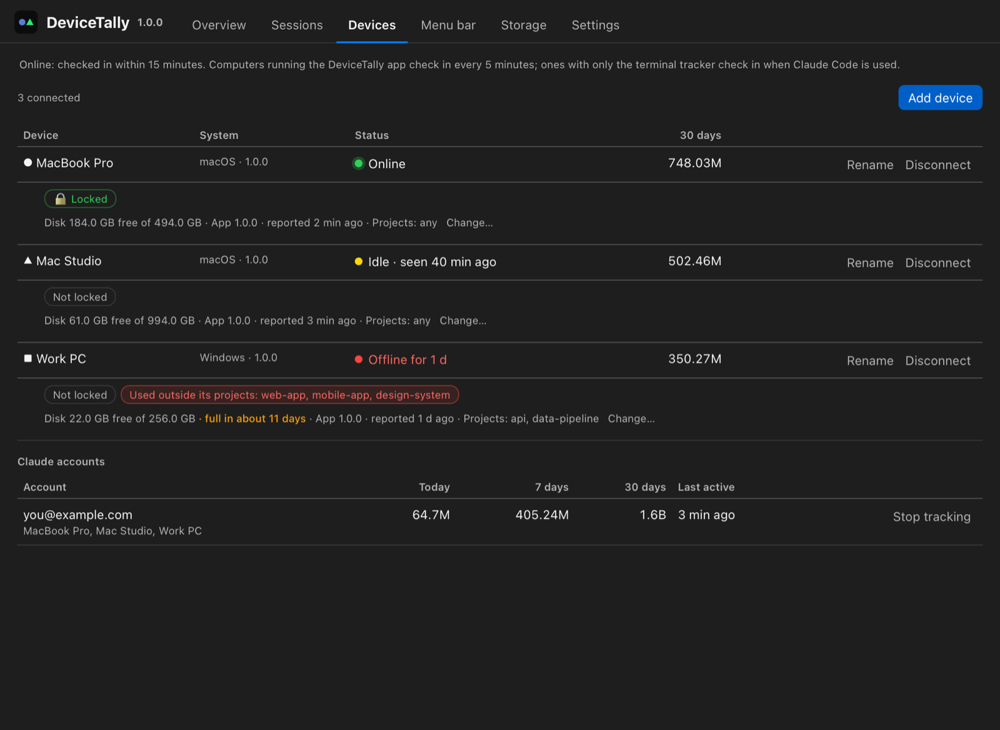
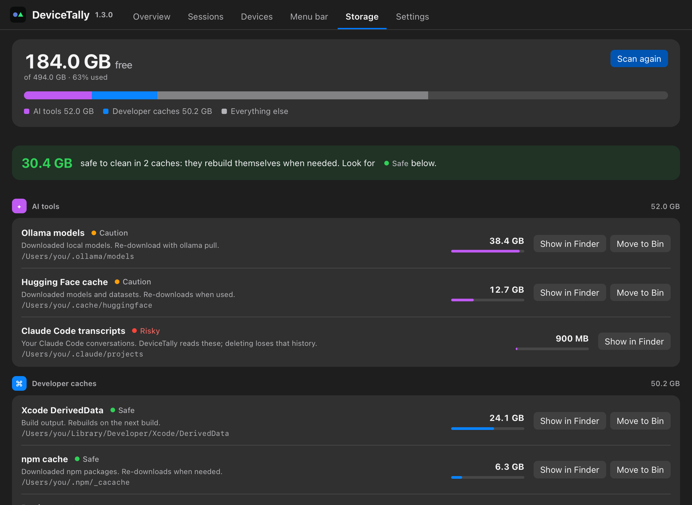

One menu-bar app for all your computers
DeviceTally brings AI coding usage (Claude Code, Codex, OpenCode, Kimi), agent status, a system monitor and storage cleanup to every Mac, Windows and Linux computer you use, in one small menu-bar app. Free, open source, and self-hosted on your own Cloudflare account.

Know when your coding agent is done
The Agent status ring in your menu bar turns orange while Claude Code works, shows a red ! when it needs your permission or answer, and a green ✓ when the task is done, with an optional Mac notification and sound. It works in the terminal, VS Code and other editors, and with Codex.

Features
Token usage and cost, every computer
Tokens and API-equivalent cost by tool, model, project and device, with a daily chart split by computer. Claude Code costs match ccusage.
A menu bar you design
Agent status, tokens today, network, CPU, temperature, memory, disk, battery (with the percentage inside) and clock. Per-item icons, layout, size, colour and 12 fonts.
Device health
Online, idle or offline; locked; tracking problems; disk with a "full in N weeks" forecast; the projects each computer is meant for.
Storage
What Ollama models, Hugging Face, Xcode, npm and other caches use, with Show in Finder and Move to Bin for caches.
Private by design
Your own Cloudflare Worker and D1 database on the free plan. Filtered and redacted on your computer before upload. Prompt text only if you turn it on.
Never slows Claude Code
Hooks only write locally (about 1 ms); uploads happen in the background, and nothing is lost offline.
Screenshots




How it compares
| DeviceTally | ccusage | tokscale | Stats | |
|---|---|---|---|---|
| Claude Code tokens and cost | ✅ | ✅ | ✅ | — |
| Codex, OpenCode, Kimi | ✅ | partly | ✅ | — |
| Several computers in one view | ✅ | — | — | — |
| Menu bar app | ✅ | — | — | ✅ |
| Agent status alerts | ✅ | — | — | — |
| System stats in the menu bar | ✅ | — | — | ✅ |
Install
Download the .dmg (Mac), windows-setup.exe or .AppImage from the latest release, or on Mac and Linux run:
curl -fsSL https://raw.githubusercontent.com/bipul0525/devicetally/main/scripts/install-app.sh | sh
Using Claude Code or Codex? The README has a copy-ready install prompt for your AI agent. Then open DeviceTally and choose Set up DeviceTally: it creates your free private server in your Cloudflare account in about 3 minutes.